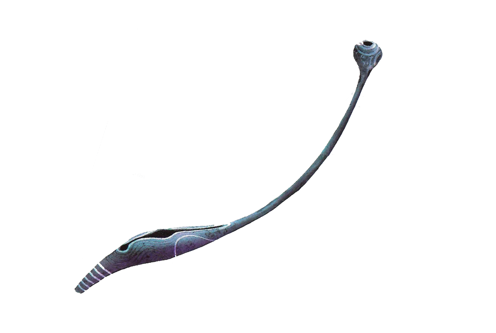
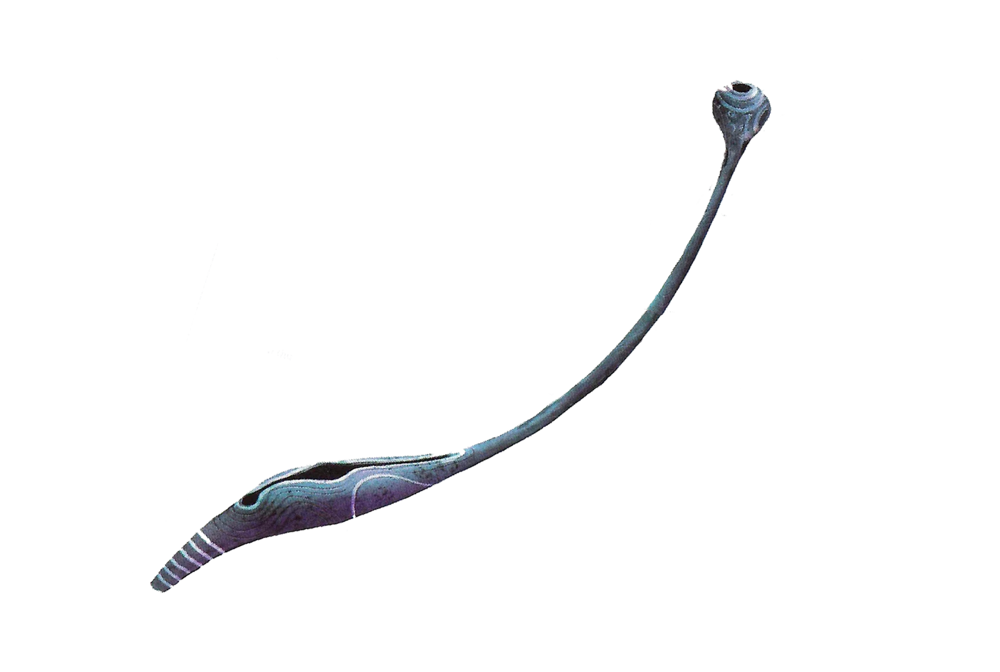

Na'vi Concept Artist
Nome comum: Na'vi
Nome Na'vi: Na'vi ou "o povo".
Taxonomia: Homo pandorus.
Extensão: Vários biomas de Pandora. População concentrada em regiõe de florestas tropicais . Clãs aafastados foram detectados em cada continente e em regiões subaquáticas, pantanosas e montanhosas.
Anatomia: A pele macia é de cor azul iridescente. O crânio é proporcionalmenre pequeno, ossos do rosto proeminentes, orelhas de felinos e um focinho protuberante. Manchas bioluminescentes para identificação e também para demonstração de humor. A média de vida é semelhantes a dos humanos. Apesar da cor da sua pele, os Na'vi possuem sangue vermelho.
Ecologia alimentar: Onívoros. Caçadores e coletores com agricultura insipiente, incluindo bebidas.
Tamanho: Os homens possuem normalmente 3 metros, as mulher um pouco menores.
A flauta azul
Função: Espírito guardião. Tocada somente nas ocasiões mais sagradas.
Nome Na'vi: Omati s'ampta.
Tamanho e peso: Quase três metros de comprimento, 18 quilos.
Material e construção: Galhos ocos da árvore-lar, um burado de um dedo feito erto do topo.
Notas: A flauta nunca foi vista pelos pesquisadores humanos nem pelos avatares.
A flauta (na verdade um trompete com um único buraco em termos técnicos) é muito antiga. A mitologia Na'vi afirma que Eywa arrancou um galho da árvore, criou o instrumento e entregou aos Omaticaya com a intenção que fosse usada para se comunicar com ela com os os espíritos dos ancestrais que já morreram.
Aritmética octal
Descrição: O sistema Na'vi de contar, baseado no número oito, desenvolvido por que os Na'vi possuem somente quatro dedos em cada mão.
Função: Usado na vida diária para o supriento de comida, equipamentos militares e de caça.
Humanos usam um sistema numeral com base 10(decimal), composto de dez digitos: 0, 1, 2, 3, 4, 5, 6, 7, 8 e 9. Uma segunda coluna acrescentada à esquerda usa esses mesmo dígitos para indicar valores dez vezes maiores. Digitos numa terceira coluna tem o valor cem vezes maior (10x10) e assim por diante.
Trança Na'vi
A primeira vista, um ser humano pode achar que a trança dos Na'vi é somente um cabelo longo e ostentoso. Poré essa trança somente com aparencia normal guarda dentro de si um intrincado sistema de gavinhas que podem ser conectadas a estruturas similares de outras formas de vida.
Essa conexão permite uma "conversa" com o conectado por meio de sinais energéticos e cinéticos transmitidos por criaturas, plantas e até pela própria Lua. Os Direhorses e os Banshees montanhenses são dominados pelos Na'vi com o uso da trança.
Sua fisiologia única permite aos Navi um nível de intimidade desconhecido na Terra. Antropólogos acreditam que quando um casal apropriado é selecionado, o macho e a fêmea irão conectar suas tranças para criar um vínculo emocional que dura a vida toda. O entrelaçamento das tranças é altamente erótico e profundamente espiritual, mas não leva à reprodução em si.
Fruta banana
Função: Fonte de comida
Nome Na'vi: Utu mauti ou "fruta empurrão"
Tamanho e peso: De 10 a 13 centímetros; 2,5 a 5 centímetros de diâmetro.
Fonte: Utrai utu mauti ou "árvore da fruta do empurrão".
Scorpiaflora maxima
Nome comum: Cardo escorpião.
Nome Na'vi: Txumpaywll ou "planta de água venenosa"
Taxonomia: Scorpiaflora maxima. O nome significa "planta grande parecida com escorpião"
Descrição Botânica: Planta herbácea grande com uma únca flor gigante e colorida na ponta.
Ecologia: Flores do cardo escorpião são polinizadas por grandes pássaros. As floras exalam um líquido ácido que limpa o solo abaixo da planta e promove a germinação das sementes, uma forma de "criação da planta"
Etnobotânica: A seiva da planta é coletada pelos Na'vi e usada para fazer remédios e dardos de caça envenenados que machucam sem matar a presa.